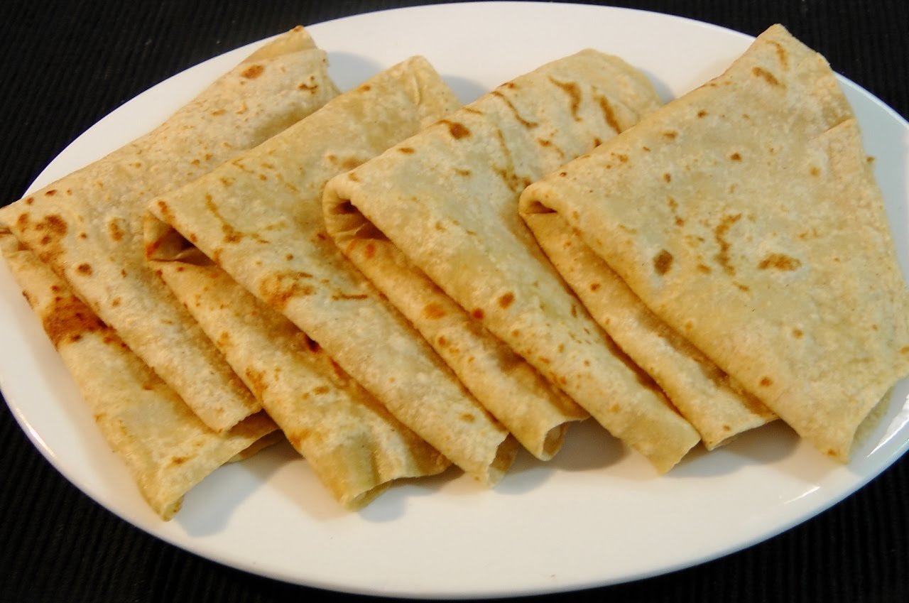

Whole wheat flour / Atta - 2 cups
Salt - 1 ts
Oil - 1 Tbsp (Vegetable oil)
Warm water - 1/2 cup (app.)
Take the flour, salt and oil in a wide mixing bowl.
Add the warm water gradually while mixing everything together. (Instead of adding all water, some people also like to add little warm milk/yogurt along with water.)
Apply few drops of oil to the vessel and the dough. Knead the dough nicely to make it soft and pliable. This will ensure final soft chapati.
Cover it with moist kitchen towel and let it rest for at least 15 minutes. This is another important step.
Make lemon sized balls of the dough.
Dip each ball into dry flour and roll out as shown in picture using a rolling pin.
Place a griddle or dosa stone on the stove at medium-high heat. When the griddle is hot, put the rolled out chapati on it.
While light spots appear (about 30 sec), flip the chapati.
Drizzle/Spray few drops of oil. After brown spots appear on the lower side of the chapati, flip again and spray little oil.
Press gently all around the chapati with a crumbled up paper towel or clean kitchen cloth or the back of a spatula. This will help the chapati to puff up.
Remove from the tawa as soon as brown spots appear on both sides. If you leave it longer, the chapati will become hard.
Transfer the hot chapatis to a hot pack till you are ready to serve. The steam that is trapped in the hot pack helps to maintain the softness of the chapatis.